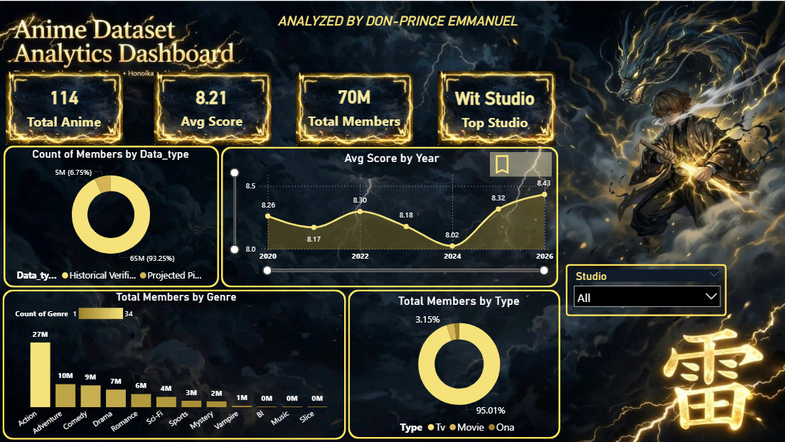
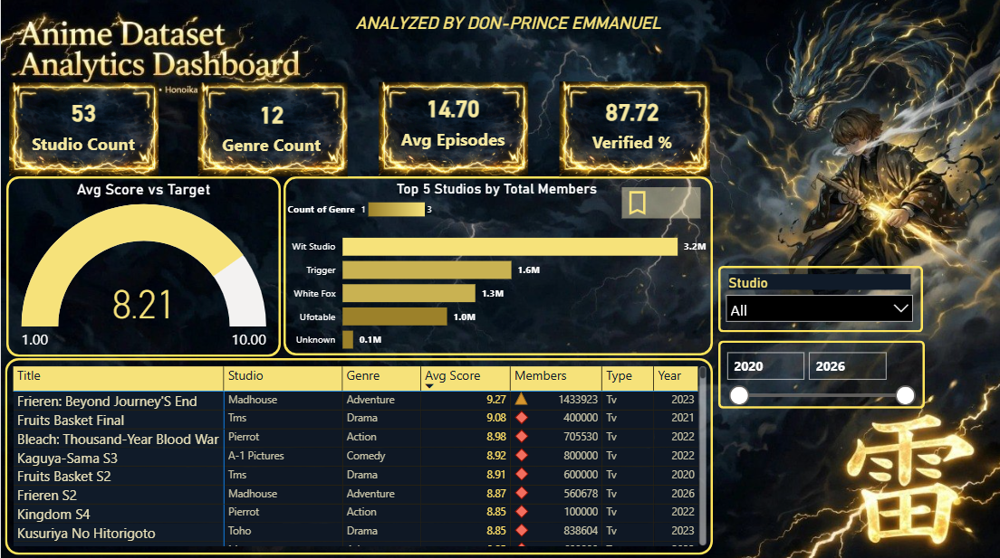

Anime Ratings 2020—2026 — What Drives Popularity?
TV dominates 95% of engagement. 87.72% historically verified wins. Wit Studio leads. Full pipeline: Python scraping → Excel QA → SQL validation → Power BI → HTML/CSS/JS
___From scraping to deployment.. Data Analysis takes a new look.
Why some anime blow up and others don't
Business Question
What factors (studio, genre, year, type, verification) correlate with higher MAL scores and member counts between 2020-2026?
- Studio dominance (Wit, MAPPA, Bones)
- Genre distribution
- TV vs Movie vs ONA
- Historical verification impact
Data Challenges
MAL scores change daily, duplicates, inconsistent studio names, outliers (12M vs 50K), year accuracy, multiple rating sources.
End-to-end stack
🐍 Python — Web Scraping
requests + BeautifulSoup + pandas. Scraped MAL, filtered score≥6.8, members≥10K, 2020-2026.
df = df.drop_duplicates('title')
df = df[(df.score>=6.8) & (df.members>=10000)]
📊 Excel — Outlier Check
Box plots, STDEV, conditional formatting, manual QA for year accuracy.
=IF(OR(C2<6.8,D2<50000),"REJECT","KEEP")
🗄️ SQL — Validation
Counts per year/genre/studio, HAVING filters.
SELECT studio, AVG(score) FROM anime GROUP BY studio HAVING COUNT(*)>=3 ORDER BY AVG(score) DESC;
⚡ Power BI — Thunder Dashboard
2 pages #101B29/#F6E27A. KPIs, donuts, line chart filters on click, bar, matrix, gauge 8.21/10, funnel, bookmark as navigation.
Avg Score = AVERAGE(anime[score]) Edit Interactions > Filter Line chart = slicer
🌐 HTML/CSS/JS — This Site
One file, responsive, lightbox, 100% ready.
Dataset Selection and Sampling Methodology
This study uses a curated dataset of anime released between 2020 and 2026 to examine rating patterns, studio representation, genre distribution, popularity, and temporal trends.
The intended dataset comprises 114 anime records selected through purposive sampling. The selection criteria include a MyAnimeList (MAL) score of at least 6.8, a minimum membership count of 10,000, and representation across the seven-year study period.
The dataset includes multiple genres, animation studios, and release formats, including television series, films, and original net animations (ONAs) . Each record contains ten attributes: title, score, genre, studio, year, type, episodes, members, rating source, and rating verification status .
The sampling design aims to provide temporal coverage and genre diversity while prioritizing anime with established audience interest. The resulting dataset is intended for descriptive and comparative analysis rather than as a complete census of anime releases.
Before final analysis, records must be checked for duplicate entries, release-year accuracy, consistency of titles and studio names, compliance with the score and membership thresholds, and the reliability of recorded ratings . MyAnimeList ratings and membership figures should be documented with their collection dates because these values can change over time.
The findings should therefore be interpreted in the context of the selection criteria and the limitations of purposive sampling.
First Edition — click to zoom


What the 114 anime tell us
TV captures 95.01% members. Rec: Prioritize TV for reach, movies for prestige.
Highest avg score, not highest count. Rec: Limited-output, high-quality model.
8.26→8.43 general assessment, dip in 2024 (oversaturation). Recovery 2025-26. Rec: Avoid overproduction years.
Verified titles average -0.22 vs projected. Verification does not drive higher scores, but indicates rating reliability. Rec: Keep verification as data-quality flag, not as quality predictor.
Sample mean. Most titles are 12-13 ep (1-cour). Rec: Keep 1-cour or 2-cour for focused pacing.
53 studios, top 3 ho;d 35% of titles. Wit avg 8.91 = quality leader. Rec: Partner with top studios for quality, or niche studios for cost.
Strategic Recommendations
Studios:
Studios: Prioritize 12-13 ep TV (1-cour), partner with top studios (Wit, MAPPA) for quality.
Platforms:
Use studio as filter, keep verification flag for data quality, standardize on M
Next:
Add budget, streaming numbers, Reddit sentiment for deeper analysis. Re-scrape monthly — MAL scores are volatile. Consider 2027-2030 for future trends.
Limitation:
Purposive sample (≥6.8, ≥10K) = descriptive of popular anime only, not full industry census. Document collection date.